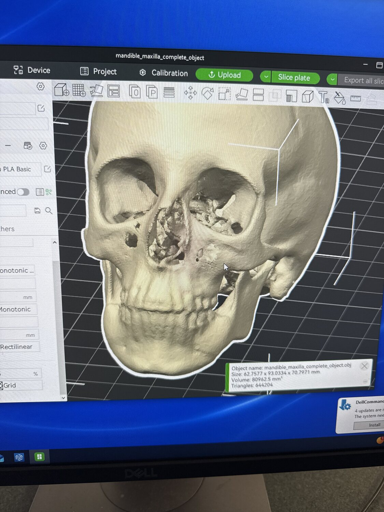
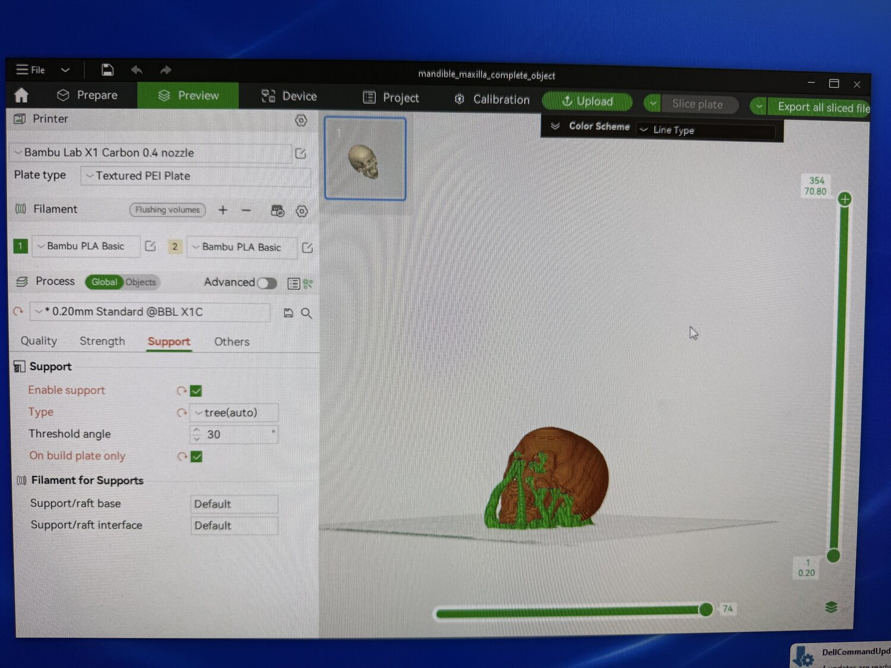
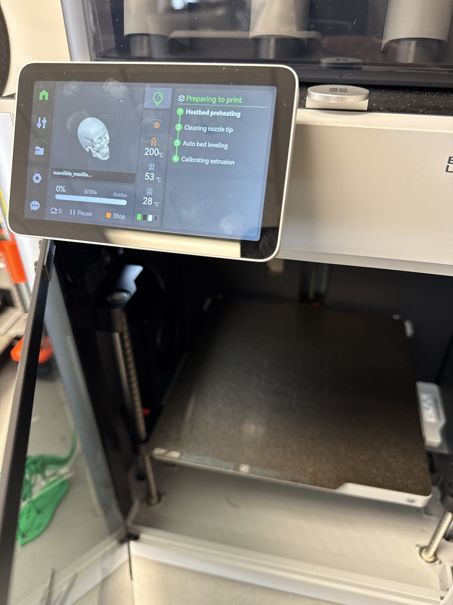
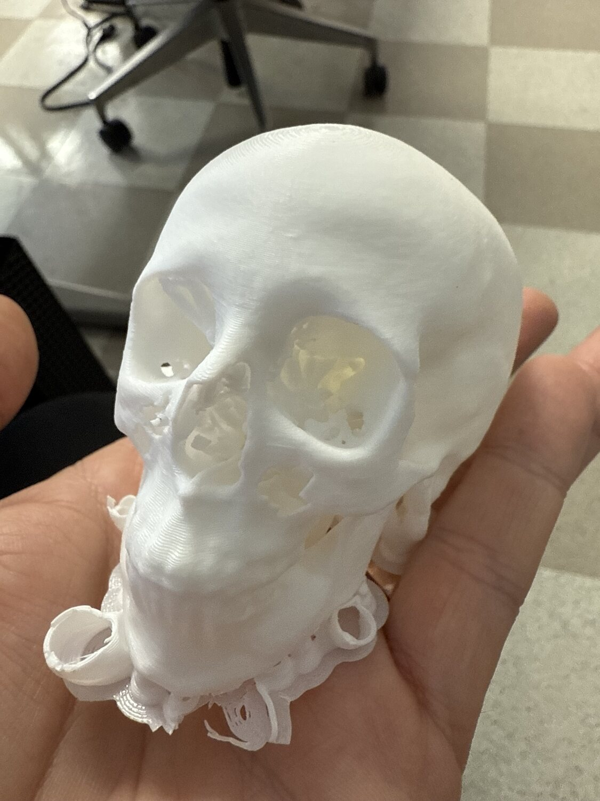

Research — 3D Printing & Data Segmentation
Do physical models help people understand complex surgical evidence?
My graduate research asks a legal and clinical communication question: when the evidence is a complex surgical procedure, does a patient-specific 3D-printed model help a non-expert, a juror or a patient, understand it better than testimony or a two-dimensional image alone?
The problem
Complex medical evidence is hard to convey. Anatomy is three-dimensional and layered, but it is usually explained through words, a static diagram, or a scan a lay viewer cannot read. In a courtroom or a clinic, that gap affects whether a person understands what happened, and whether they can reason about it. My research studies how the form of the demonstrative, oral testimony, two-dimensional imaging, a three-dimensional digital model, and a physical 3D-printed model, changes comprehension, perceived complexity, and confidence.
The approach
The work runs the full pipeline from clinical data to a model a person can hold. I start from medical imaging, segment the relevant anatomy, build a three-dimensional digital model, and produce a physical model through additive manufacturing (3D printing). This is the same pipeline used for patient-specific surgical models, applied here to the question of communication and comprehension.
Graduate research and independent study in the M.S. in Biomedical Visualization program (BVIS 551, 3D Printing with Data Segmentation; BVIS 594, Medical Illustration in Practice), with faculty mentorship.


The surgical subject matter, including hepatobiliary anatomy and the critical view of safety in gallbladder surgery, is exactly the kind of testimony juries struggle with: small, overlapping structures where the difference between a correct and an incorrect step is hard to see. Building accurate models of that anatomy is the foundation for testing whether a physical object makes it click.
From data to a model you can hold
The 3D-printing pipeline, one skull, every stage
To test the question, I take a single case all the way through the pipeline. A skull segmented from CT data becomes a watertight digital model, is prepared and sliced for printing, runs on the printer, and comes off the bed as a physical object a person can pick up and turn over. The same anatomy, carried from a scan a layperson cannot read to something they can hold in their hands.




Why it matters for litigation
This is directly the question a litigation creative team faces: what is the most effective, most persuasive, and most defensible way to present complex evidence to a judge or jury? Most trial graphics decisions are made on instinct. My research is an attempt to study them, and to bring evidence to how evidence is presented.